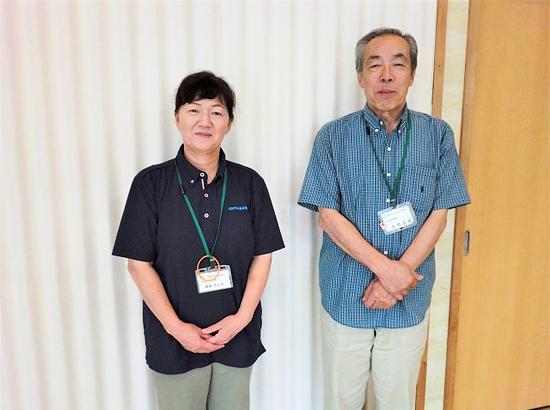
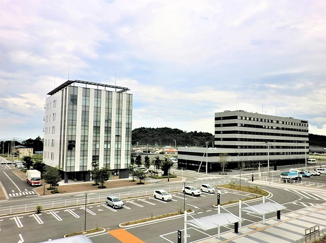

被災地のいま 宮城県・福島県の現状
「被災地のいま」 ～福島県広野町～
第74回 2019年10月5日 ―まち・住まい・コミュニティ―
「帰ってきて良かったと思えるコミュニティづくり」
福島県広野町／広野町社会福祉協議会
「仮設住宅にいた頃の方が良かった」。地域住民が集う「ふるさとサロン」で根本さと子さん（広野町社会福祉協議会、以下社協）は、参加者がつぶやくのを耳にしました。広野町の避難指示が解除になり、町民が徐々に戻ってき始めた頃のことです。
「自分は帰ってきても隣の家はまだ戻ってこない。お茶飲みする場も近くにない。仮設住宅なら集会所がすぐそばにあった。だから仮設住宅の方が良かった、ということなのです」と根本さんは住民の複雑な胸のうちを語ります。
ふるさとサロンは「帰ってきて良かったと思えるコミュニティづくり」を目標に、社協が月1回開催しているイベントです。参加者の多くは高齢者で、陶芸や園芸、畑づくりなど多彩なプログラムが特徴です。社協のスタッフが運転するバスで、桜や紅葉を見にいくこともあります。
サロンの回を重ねることで、仮設住宅を懐かしむ声は次第に減り、「ここに来て友だちに会えるのが嬉しい」「戻ってきて良かった」という声が増えました。
一方、同社協の佐野光男さんは「高齢世帯だけ町に戻り、子ども世帯は避難先に留まったままの家が多い」と、避難を機に家族の形が変わったことを指摘します。高齢者の中には避難先のいわき市でかかった病院に今も通院している人がいます。「だが自分で車を運転して行ける人は少ない。昔なら同居していた家族の誰かが送ってくれたが、今はそれができない」（佐野さん）などの問題も出ています。
町内には新しいオフィスビルやスーパーができていますが、病院や交通網など生活インフラの整備はまだこれからです。「復興しているという実感は薄い」と根本さんが言うように、町が今よりずっと住みやすくなるにはさらに時間がかかるのでしょう。
「帰ってきて良かったと思えるコミュニティ」を住民自身の手で築いていくのも、これからです。「私たちがいなくても活動できるよう、担い手を育てていければと思っています」。今はその助走期間。導きながら支えながらの取り組みが今日も続いています。

▲広野町社会福祉協議会生活支援相談員の根本さと子さんと佐野光男さん。「社協主催のふるさとサロン、生きがい事業や住民が主体的に開催している地区の集いなど、様々な交流の場があるので多くの人に参加してほしい」と話します。

▲JR常磐線広野駅前には新しくオフィスビルやホテルが建ち、再開発が進みます。
2019年3月21日、みやぎ生協はコープふくしま・福島県南生協と組織合同しました。このコーナーのタイトルも「被災地のいま みやぎ生協・コープふくしまから宮城・福島のいまをお伝えします」に変え、福島県の現状についてもお伝えしていきます。
前の記事
第73回「被災地のいま ～宮城県亘理郡～」（2019年9月5日）